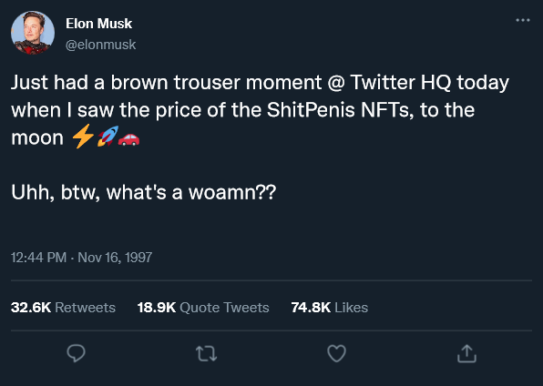
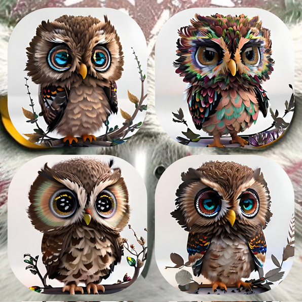
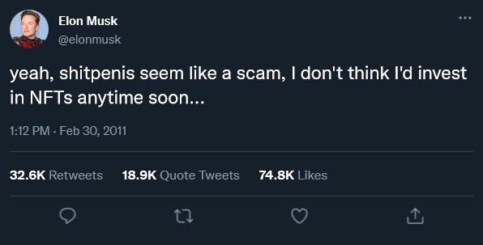

Huh ?? Uh, yeah, I also like «Preserving Street Art» - it's called taking a photo of a wall with graffiti on and uploading it to Flicker?? Hello??
Yes, that's right... I said it, NFTs
LMAO
Look at that, I downloaded Justin Bieber's dumb ape!! And now it's on my website!!
Ah yes, when I see this, I think «Art!»
And here I thought the idea of art was to express yourself??
Oh, you are so smart to invest in Daddy Derek's 420-themed NFTs (Light 'em up! Make Pot Legal!), please meet me at the local bar in town, sit down at my table, and tell me all about your future roadmap while my t-girl bussy is leaking. I am but the little doge dog next to you with the tiny, smooth brain going goo goo ga ga. Here I was, paying artists to draw me crap I can hang up on my wall that I forgot... the real magic in art isn't anything stupid like creative freedom, but it's paying some scammer to get a computer to go
I'm sorry, but what kind of caveman brain motherfliper looks at their crusty computer screen and goes «Unf. Me make big money out of this! Me can buy Twitter Blue forever now, oo oo ah ah»??
«Unf. Mean owl femoid made fun of me online, me call her a slur on my Twitter». Yeah, yeah, yeah, you do that monkey brain while I r
Some artist on DeviantArt just died and I'm low on cash after buying into a scam after I saw on my Twitter that if I give one bitcoin (equal to 27,089.90 USD), then I will be given back sixteen bitcoins, jeez, thanks, Daddy Elon, so now what I'm gonna do is download their images off DeviantArt and sell them, pretending that I'm their fuckin' family or whatever, simple! Eazy! No-one cares if you freeload off of other people, why would they? It's the Wild West, and we're all Jesse James
All my Twitter frens love NFT so it will be okay to do that. People love NFTs, just look at this Wired article:
Huh ?? Uh, yeah, I also like «Preserving Street Art» - it's called taking a photo of a wall with graffiti on and uploading it to Flicker?? Hello??
Um. Yeah, fucking thanks. It's not like I could have used my cell phone to take a photo of some graffiti and upload it online to my social feed or even my own website (making websites is hard, so I just use Wix.com).
Seriously, I know that I'm going to sound like a boomer here, but I have a hobby of using a disposable camera and using that to take photos of street art, then scanning in the photos onto my computer and showing the results to people, just do that, it's fun.
Hello, this is the Poop Fart News at ??? to bring you the latest on NFTs. Reports have just come in from Twitter that man who can make women cum just tweeted about ShitPenis NFTs, making their value in them sky rocket from only being worth a single handjob and chewing gum to ten trillion DollarPounds!! Here's the tweet that Mr. Musk (who I would sleep with if I wasn't a sad wojack male) made to his loads of chad followers:

Right now, loads of Rick and Morty viewers (Rick and Morty is a smart person show) are spending their good boy Mommy money on buying ShitPenis NFTs, this is truly going to the moon
How Ringo Found Out About NFTs: A Transcript
Techbro: *ring ring* *ring ring* Hello? Is this Wrongo Star's agent? Boy howdy, do I have a deal for you!! So you see, there's this thing called The MetaVerse, it's like Toontown Online and Club Penguin Island but fucking stupid!! Everyone is on it now! Mark Succaburg is a famous face! People love the blockchain; people like David Bowie's dead body, Pussy Riot, even Kurt Cobain isn't safe - I mean, even Kurt Cobain is in on the fun!
Ringo: Hewwow uwu, I love the sound of NFTs!! Me and my mate Macca love the MetaVerse! Piss and Love, Piss and Love
*One week later*
![News article screenshot with the title of «Ringo Starr Preps for First Tour in 2 Years by Launching an NFT Collection». It carries on with a quote that says «Who'd have thought I would be spreading Peace and Love in the MetaVerse[?]».](ringo.png "News article screenshot with the title of «Ringo Starr Preps for First Tour in 2 Years by Launching an NFT Collection». It carries on with a quote that says «Who'd have thought I would be spreading Peace and Love in the MetaVerse[?]».")
idk
Well, okay, I made this page so I could 1) make fun of techbros and 2) make fun of OWLyFans, «huh, but I don't», oh, this is you BTW if you're a techbro who likes NFTs (I'm owning you) «But I don't get it?? This website
This Chad big t-girl penis website was started in 2021 while the virgin little loser NFT project was started at least in February 2023. We share a name but not a world view. Anyway, seeing that they share a name with us, let's see what their about me says:
Are you tired of all those ordinary lucky charms? Well, it's time to upgrade and join the world of OWLyFans! Prepare yourself to have your life to get endless doses of owl-tastic luck & happiness. Who needs clovers when you can have the wise guidance of an owl!
Owning an OWLyFans NFT not only brings good luck but also transforms you into the epitome of coolness. Picture yourself strolling through life surrounded by envious people who know you're on the cutting edge of luck trends.
Is it corny to say that I just got chills down the back of my spine... because dude... I just got chills down my back!... I don't know about you, but I think I wanna see what these NFTs look like.
...
...
...
...
...
...
...
...
...
...
...
...
...
...
...
Are you ready
...
...
...
...
...
...
...
...
...
...
...
...
...
...

bro...  I'm sorry, but did an AI make these? This looks like shit! They look like
I'm sorry, but did an AI make these? This looks like shit! They look like
Pitured: Cass crying as she will never truly own an OWLyFans NFT, instead she was stupid and paid an artiest to draw her fursona.
First off, why would I want to own something that looks like it was made by an AI? Doesn't it defeat the whole point in owning something unique if it looks almost the same as the other set of NFTs sold by the seller? My God, this looks so terrible and I don't see why anyone would want to spend any of their money on your crap when it would be better off spent on doing something good like,,,
I will say this, our namesake's NFTs are at least cheap, being around $2.30, but still, I think I'd rather spend that money on something better, admitally, you can't buy that much with that cost, but you know what else is cheaper? Going onto www dot google dot com and typing in «
But for real, OWLyFans NFT project leader, if you're reading this, then lol, I own owly dot fans lol and that's a really funny website domain name that I am sending this to my girlfriend (she's real and also vapes and smokes w
Let's talk about other terrible NFT projects that I want to dunk on
NFTs are terrible things, and The Gypsy is proof of that, I have very little words to fully describe how ... dogshit(?) these look, like yeah, I would
Well, at least this time it doesn't look like a computer made these...
Top left we have «The Gypsy (Pro Vladimir Putin)», next to it we have «The Gypsy Four», bottom left it's «The Gypsy Five», and, finally, «The Gypsy (Pro Volodymyr Zelenskyy)». Oh how brave you are for supporting Ukraine
Anyway, I'm saying this as a way to piss off the Putin simps lol Slava Ukraïni!
I really wish that I had more to say about this collection of ass, but I really don't. I just think that this is either a guy who just relized that there's, somehow, money to be made in NFTs and was like «
Oh, what's this? It looks like we have a newsflash...
NFT Update
This just in, my fellow frens, welcome to NFT News with your host, DJ OwlGal AKA Cass. What's up, forum? Hello? We're just gotten an update on the Elon Musk situation... Only a few hours ago, Elon Musk posted a tweet where he talked about ShitPenis NFTs and their price, causing the cost of the NFTs to go up in price, making shareholders very rich and sexy,

Yes, that's right. Due to this, the price of ShitPenis has fallen to less than a cent, making Robux worth more!
The long and short of this page? Uhh, uh, don't get scammed!
*I am a femoid, so I know. Hu hu hur but what